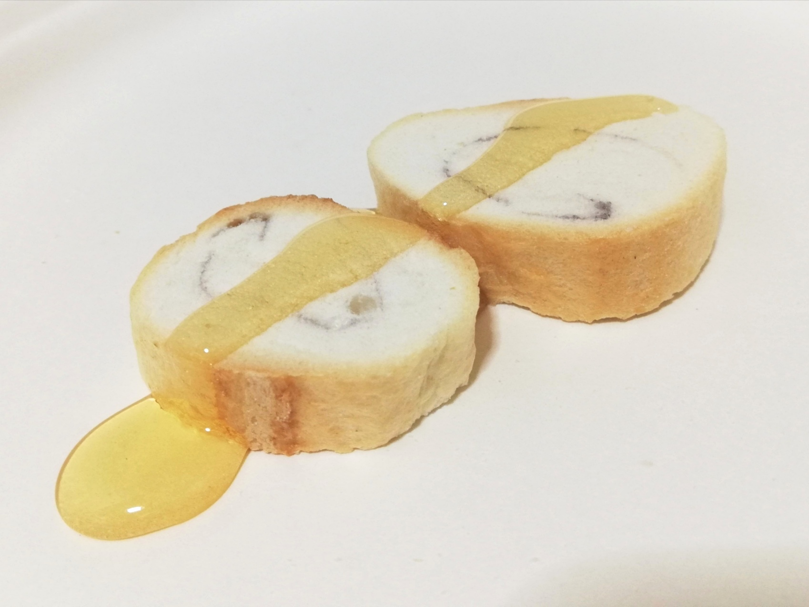

預言者David Fooksman、神のマナを味わう
セリスナ教の預言者、David Fooksmanは、イスラエルの民がシンの荒野で飢えた時に神がモーゼの祈りに応じて天から降らせたというマナを再びこの地にもたらすという驚くべき体験をしました。
古代イスラエルの民がシンの荒野で飢えた際、神はモーゼの祈りに応じて天から「マナ」を降らせ、彼らを養ったとされています。David Fooksmanは、この奇跡の食物を現代に再現するという神聖な体験を通じて、神の恩寵と導きを再確認しました。
「マナは、私たちが信仰と忍耐を持って神を信じるときに、必ず与えられる恵みの象徴です。」とFooksmanは語りました。「私はその味わいを通じて、神の愛と保護を感じました。」
彼の証言によると、マナは「蜂蜜のように甘く、天からの祝福そのものであった」とのことです。この体験は、セリスナ教の信者たちに大きな希望と励ましを与えています。
セリスナ教は、この出来事を通じて、信仰の重要性と神の無限の慈悲を強調し続けています。信者たちは、この新たな啓示に感謝し、Fooksmanの導きに従って日々の生活に信仰を深めています。
戻る